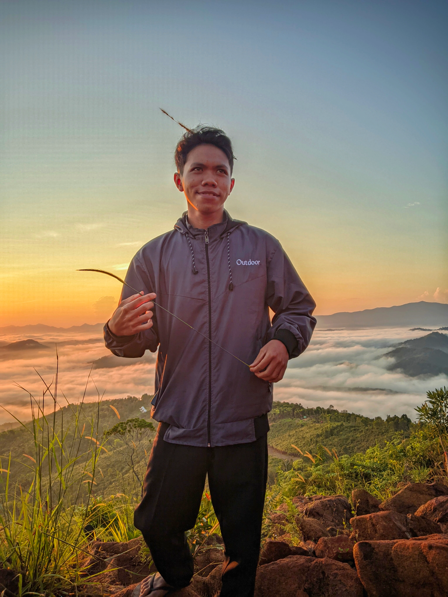

Mengenal lebih dekat struktur kepengurusan UKM Chip.Com. Struktur kepengurusan adalah hal yang sangat penting dalam sebuah organisasi, termasuk UKM Chip.Com. Dengan mengetahui struktur kepengurusan, kita dapat memahami bagaimana organisasi tersebut dijalankan dan siapa saja yang terlibat di dalamnya.
UKM Chip.Com memiliki struktur kepengurusan yang terdiri dari beberapa divisi, seperti divisi pengajar, divisi humas, dan divisi perlengkapan. Masing-masing divisi memiliki tugas dan tanggung jawab yang berbeda-beda, namun semua divisi tersebut bekerja sama untuk mencapai tujuan organisasi.
Dalam struktur kepengurusan UKM Chip.Com, ada beberapa posisi yang sangat penting, seperti ketua, sekretaris, dan bendahara. Ketua merupakan pemimpin tertinggi dalam organisasi, sekretaris bertanggung jawab untuk mengelola administrasi, dan bendahara mengelola keuangan organisasi.
Dengan mengenal lebih dekat struktur kepengurusan UKM Chip.Com, kita dapat memahami bagaimana organisasi tersebut dijalankan dan bagaimana kita dapat berkontribusi untuk mencapai tujuan organisasi.